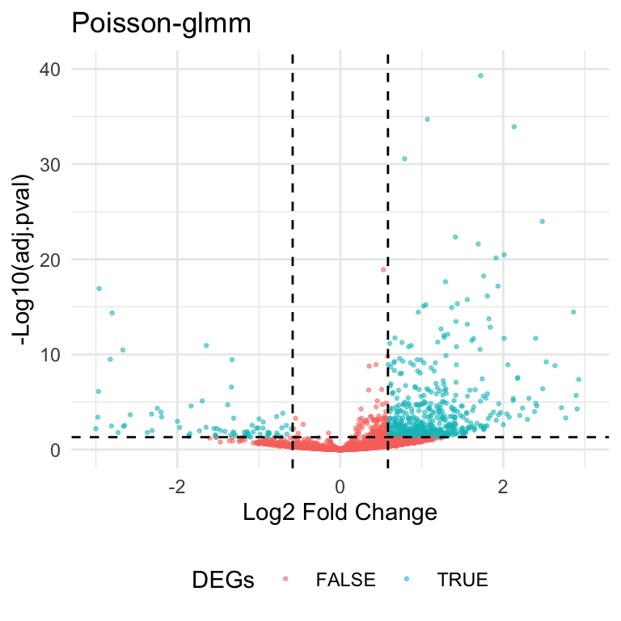
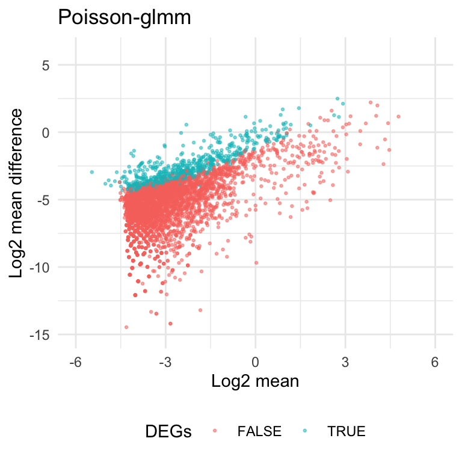

Last updated: 2023-12-01
Checks: 7 0
Knit directory: DEanalysis/
This reproducible R Markdown analysis was created with workflowr (version 1.7.0). The Checks tab describes the reproducibility checks that were applied when the results were created. The Past versions tab lists the development history.
Great! Since the R Markdown file has been committed to the Git repository, you know the exact version of the code that produced these results.
Great job! The global environment was empty. Objects defined in the global environment can affect the analysis in your R Markdown file in unknown ways. For reproduciblity it’s best to always run the code in an empty environment.
The command set.seed(20230508) was run prior to running
the code in the R Markdown file. Setting a seed ensures that any results
that rely on randomness, e.g. subsampling or permutations, are
reproducible.
Great job! Recording the operating system, R version, and package versions is critical for reproducibility.
Nice! There were no cached chunks for this analysis, so you can be confident that you successfully produced the results during this run.
Great job! Using relative paths to the files within your workflowr project makes it easier to run your code on other machines.
Great! You are using Git for version control. Tracking code development and connecting the code version to the results is critical for reproducibility.
The results in this page were generated with repository version dd47fda. See the Past versions tab to see a history of the changes made to the R Markdown and HTML files.
Note that you need to be careful to ensure that all relevant files for
the analysis have been committed to Git prior to generating the results
(you can use wflow_publish or
wflow_git_commit). workflowr only checks the R Markdown
file, but you know if there are other scripts or data files that it
depends on. Below is the status of the Git repository when the results
were generated:
Untracked files:
Untracked: .DS_Store
Untracked: .Rhistory
Untracked: data/.Rhistory
Untracked: data/10X_Kang_DEresult.RData
Untracked: data/10X_inputdata.RData
Untracked: data/10X_inputdata_DEresult.RData
Untracked: data/10X_inputdata_cpm.RData
Untracked: data/10X_inputdata_integrated.RData
Untracked: data/10X_inputdata_lognorm.RData
Untracked: data/10Xdata_annotate.rds
Untracked: data/Bcells.Rmd
Untracked: data/Bcellsce.rds
Untracked: data/data2sce.RData
Untracked: data/permutation.RData
Untracked: data/vstcounts.Rdata
Unstaged changes:
Modified: code/DE_methods.R
Modified: code/functions_in_rmd.R
Note that any generated files, e.g. HTML, png, CSS, etc., are not included in this status report because it is ok for generated content to have uncommitted changes.
These are the previous versions of the repository in which changes were
made to the R Markdown (analysis/new_criteria.Rmd) and HTML
(docs/new_criteria.html) files. If you’ve configured a
remote Git repository (see ?wflow_git_remote), click on the
hyperlinks in the table below to view the files as they were in that
past version.
| File | Version | Author | Date | Message |
|---|---|---|---|---|
| html | 688fbb4 | C-HW | 2023-12-01 | html |
| Rmd | c88d389 | C-HW | 2023-12-01 | heatmap color |
| Rmd | ecc86c5 | C-HW | 2023-12-01 | update new criteria |
| Rmd | 3803697 | C-HW | 2023-12-01 | upload rmd |
| html | 13d726d | C-HW | 2023-05-18 | add DE results on different groups |
| html | fc9f4b6 | C-HW | 2023-05-18 | add new_criteria |
If there is a statistically significant difference or change in read counts or expression levels between two experimental conditions, a gene is considered as differentially expressed. In current gene DE analysis, the criteria is based on statistical significance \(-\log_{10}\text{(p-value)}\) and magnitude of change \(\log_{2}\text{(fold change)}\). A volcano plot is commonly used to visualize the result.
Here’s the volcano plot for the DE analysis on group2 and group19. The thresholds for adjusted p-values and fold changes are \(0.05\) and \(1.5\), respectively. There are \(608\) genes identified as hits based on the criteria.

In scRNA data, lots of mean counts are extremely close to zero. In this case, the fold change can be less meaningful to characterize the difference of read counts. For example, the gene means can be \(2^{-3}\) and \(1.5*2^{-3}\) in two groups. Even though it passes the threshold for fold changes\((1.5)\), the absolute difference is only \(0.0625\). it doesn’t provide the same strength of evidence in absolute difference compared to genes with larger means.
From the scatter plot below, current criteria would select genes with small means. And these genes usually have smaller values in log2 mean difference \((\log_2|\text{mean1-mean2}|)\).

Let’s make some heatmaps to see the read counts of DE genes with different range of mean.
To rule out the genes with smaller means, we can add a filter on the previous criteria. If the gene mean doesn’t pass the threshold, then it can’t be counted as a DE gene. From the heatmaps shown above, we set the default threshold at \(-2.25\) for the average log2mean in two different groups \((\frac{\log_2\text{mean1}+\log_2\text{mean2}}{2})\).
The heatmaps also tell us we might miss out some genes that have smaller genes but large absolute difference. To save the genes, we allow the genes with log2 mean difference greater than \(-1\) to pass the filter as well.
Here’s the volcano plot and scatter plot based on the new criteria.
| Version | Author | Date |
|---|---|---|
| dd47fda | C-HW | 2023-12-01 |
R version 4.2.2 (2022-10-31)
Platform: x86_64-apple-darwin17.0 (64-bit)
Running under: macOS Big Sur ... 10.16
Matrix products: default
BLAS: /Library/Frameworks/R.framework/Versions/4.2/Resources/lib/libRblas.0.dylib
LAPACK: /Library/Frameworks/R.framework/Versions/4.2/Resources/lib/libRlapack.dylib
locale:
[1] en_US.UTF-8/en_US.UTF-8/en_US.UTF-8/C/en_US.UTF-8/en_US.UTF-8
attached base packages:
[1] stats4 stats graphics grDevices utils datasets methods
[8] base
other attached packages:
[1] gridExtra_2.3 pheatmap_1.0.12
[3] SingleCellExperiment_1.20.1 SummarizedExperiment_1.28.0
[5] Biobase_2.58.0 GenomicRanges_1.50.2
[7] GenomeInfoDb_1.34.9 IRanges_2.32.0
[9] S4Vectors_0.36.2 BiocGenerics_0.44.0
[11] MatrixGenerics_1.10.0 matrixStats_1.0.0
[13] ggpubr_0.6.0 dplyr_1.1.2
[15] ggplot2_3.4.2
loaded via a namespace (and not attached):
[1] Rcpp_1.0.11 lattice_0.21-8 tidyr_1.3.0
[4] rprojroot_2.0.3 digest_0.6.33 utf8_1.2.3
[7] R6_2.5.1 backports_1.4.1 evaluate_0.23
[10] pillar_1.9.0 zlibbioc_1.44.0 rlang_1.1.2
[13] rstudioapi_0.15.0 car_3.1-2 whisker_0.4.1
[16] jquerylib_0.1.4 Matrix_1.5-4.1 rmarkdown_2.23
[19] labeling_0.4.2 stringr_1.5.1 RCurl_1.98-1.12
[22] munsell_0.5.0 DelayedArray_0.24.0 broom_1.0.5
[25] compiler_4.2.2 httpuv_1.6.11 xfun_0.41
[28] pkgconfig_2.0.3 htmltools_0.5.5 tidyselect_1.2.0
[31] tibble_3.2.1 GenomeInfoDbData_1.2.9 workflowr_1.7.0
[34] fansi_1.0.4 withr_2.5.0 later_1.3.1
[37] bitops_1.0-7 grid_4.2.2 jsonlite_1.8.7
[40] gtable_0.3.3 lifecycle_1.0.4 git2r_0.32.0
[43] magrittr_2.0.3 scales_1.2.1 cli_3.6.1
[46] stringi_1.8.2 cachem_1.0.8 carData_3.0-5
[49] farver_2.1.1 XVector_0.38.0 ggsignif_0.6.4
[52] fs_1.6.3 promises_1.2.0.1 bslib_0.5.0
[55] generics_0.1.3 vctrs_0.6.4 RColorBrewer_1.1-3
[58] tools_4.2.2 glue_1.6.2 purrr_1.0.1
[61] abind_1.4-5 fastmap_1.1.1 yaml_2.3.7
[64] colorspace_2.1-0 rstatix_0.7.2 knitr_1.29
[67] sass_0.4.7